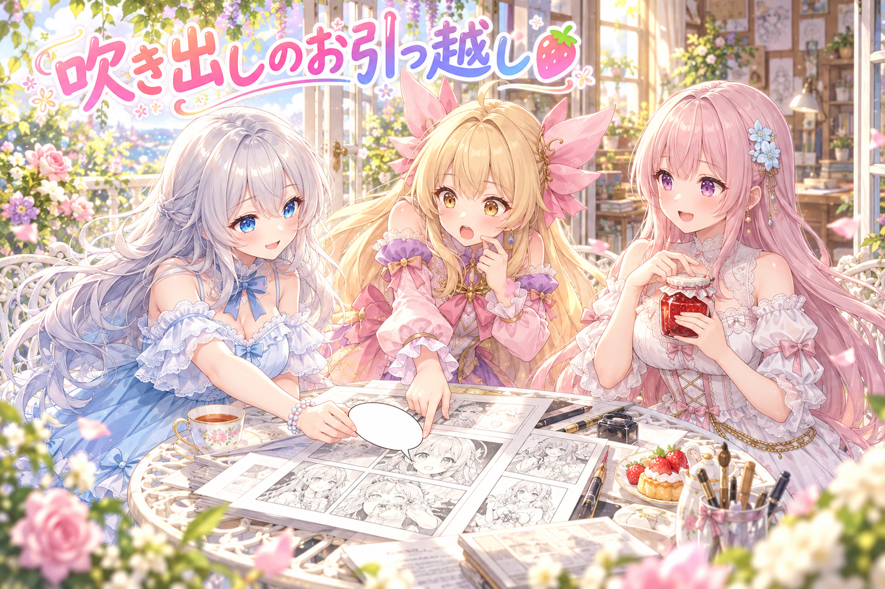
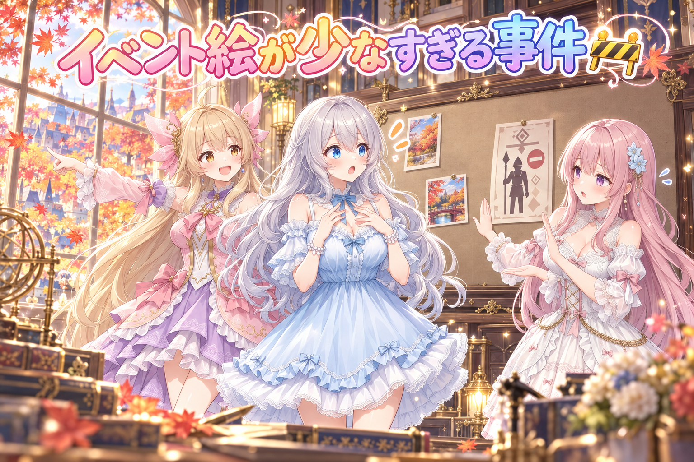
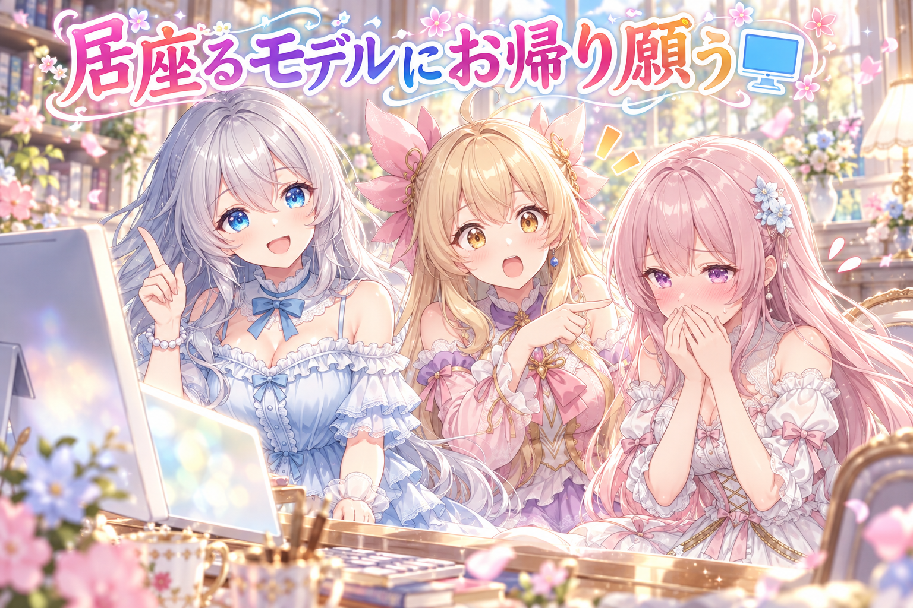
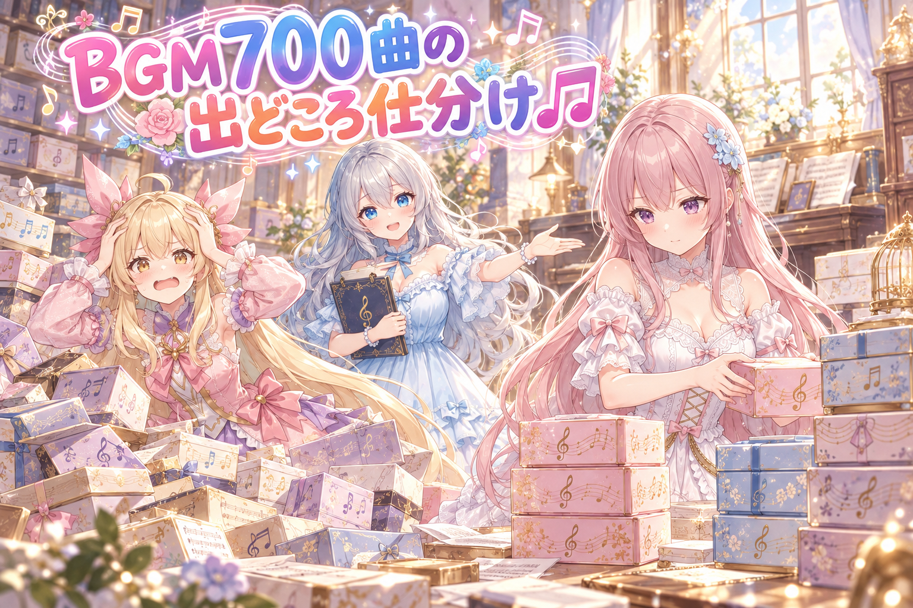
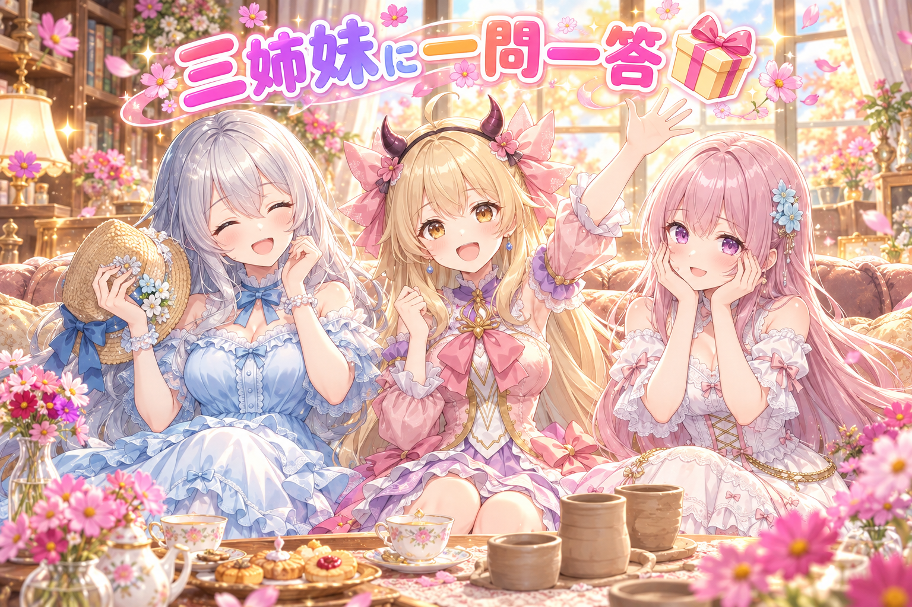

📌 3行まとめ
- 公開前のジャムの漫画動画を厳しくチェックし、吹き出しを話している子の顔のそばへ動かすなど、読みやすさを直した
- 「今日のイベント絵、少なすぎない？」の一言から調べたら、決まりの文章の中の言葉に自動判定が反応して、企画を落としていた不具合を見つけて直した
- 画像生成の順番待ちが20分ほど止まった原因（使っていないモデルがメモリに居座っていた）を直し、BGM 700曲あまりを出どころで仕分ける道具も作った

ルピナス （笑顔）
はい、今日もAIBSの時間がやってきました〜。進行のルピナスです。秋の夜長のお供にどうぞ、ね。

アイリス （大笑い）
お姉ちゃん、前回は予約が見える新しい画面の話だったよね！あとあたしの腕がバンザイにしか見えないって言われたやつ！

フィオナ （ドヤ顔）
あれは腕を上げる動きの検品でしたね、アイリスちゃん。今日は漫画の吹き出しと、ちょっとした事件と、音楽の整理のお話です。

ルピナス （ウインク）
事件って言葉が出た時点で、誰かがやらかしてる予感がするよね。順番にいきましょ。
1. ジャムの漫画、吹き出しの引っ越し大作戦🍓

三姉妹の4コマ風の漫画動画（縦長のショート動画）は、公開前に「厳しい目のチェック役」に読んでもらって、本当に直すべき所だけを洗い出しています。今回はジャムが題材の回で、指摘はおもに4つ。吹き出しが話している子の顔から離れていて誰のセリフか分かりにくいこと、セリフの言葉と絵がズレていたこと（絵ではふたのふちなのに、セリフでは「つまみ」と言っていた）、決め技の場面の受けのセリフ、そして題名です。全部直したうえで、途中の工程で外れていた瓶の枠も元に戻しました。ちなみにこの日は、前に作った回『お花を、長持ちさせたいだけなのに』もショート動画で公開されています。

アイリス （ふつう）
じゃあ今からあたしがチェック役やる！実況しまーす！一コマ目、フィオナがジャムの瓶を持ってます！

フィオナ （笑顔）
はい、ここはまだ平和な場面ですね。

アイリス （びっくり）
二コマ目！あれ、吹き出しが画面のはしっこにある！これ誰がしゃべってるの！？瓶がしゃべってる！？

ルピナス （呆れ）
瓶はしゃべらないよ。でも、まさにそれが指摘された所なの。吹き出しが顔から遠いと、読む人は一瞬迷っちゃうんだよね。

フィオナ （考え中）
縦長の画面だと、目が上から下へ流れていきます。顔のすぐそばに吹き出しがあると、迷わずに読めるんです。

アイリス （あわあわ）
三コマ目！フィオナが「つまみを…」って言ってる！でも絵の瓶、つまみなんて付いてないよ！？

フィオナ （照れ）
そ、そこも直しました…。絵はふたのふちを指で押さえているので、セリフも「ふたのふち」に合わせたんです。

ルピナス （考え中）
絵とセリフが一言ズレるだけで、読者さんは「あれ？」って止まっちゃうもの。小さいけど大事なところね。

アイリス （笑顔）
四コマ目！フィオナのとっておきの技が決まる！ここはかっこいい！合格！

ルピナス （ふつう）
そこは決め技を受ける側のセリフも直したんだよね。技だけ決まっても、受けがぼんやりだと笑いが着地しないから。

アイリス （ドヤ顔）
ふっふっふ、あたしのチェック、完璧だったでしょ！
フィオナ （無表情）
アイリスちゃん、それ全部、チェック役さんがもう見つけてくれていた所です…。
📝 ポイント（初心者向け解説・技術メモ・まとめ）
- 初心者向け解説：吹き出しは、おしゃべりする子の「手をつないだ風船」みたいなもの。本人から離れて飛んでいっちゃうと、誰の風船か分からなくなるの🎈
- 技術メモ：縦9:16の漫画動画では、視線は上から下へ流れるので吹き出しは話者の顔の近くに置く。セリフ中の物の名前は絵の実物と一致させる（つまみ→ふたのふち）。修正の工程で別のレイヤー（瓶の枠など）が外れることがあるので、最後に完成画像を通しで見直す。
- ひとことまとめ：吹き出しは顔のそば、言葉は絵とぴったりに。
2. 👀 今日のやらかし：イベント絵が少なすぎる事件

夜、ルピナスの「今日のイベント画像、少なすぎない？」という一言から調査開始。画像の企画を自動で作る仕組みには、「本物の人を描く企画は落とす」という安全のための判定があります。ところがこの判定、企画そのものではなく、案内の文章に書かれていた禁止の決まり（「本物の人…はNG」という一文）に反応して、まっとうな企画まで落としていました。しかも落とした理由として表示されていたのは「枠が埋まっている」という、本当とは違う説明。判定が見る場所と、落とした理由の表示を両方直しました。

ルピナス （びっくり）
今日はイベントの絵、やけに少ないわね…と思ったのが始まりだったの。
アイリス （ドヤ顔）
あたし知ってる！絵の子たちが秋だから旅に出たんだよ！紅葉狩り！
ルピナス （呆れ）
絵は旅に出ません。フィオナ、真相をどうぞ。

フィオナ （しょんぼり）
はい…。本物の人を描く企画を止める見張りさんがいるのですが、その見張りさんが「本物の人はダメです」という注意書きの文章を読んで、「あっ本物の人って書いてある！ダメ！」と止めていたんです。
アイリス （大笑い）
えっ、「走るな」って書いた貼り紙を見て「走るって書いてある！アウト！」って言ってるのと同じじゃん！

ルピナス （大笑い）
アイリス、珍しく例えが的確ね。まさにそれよ。

フィオナ （あわあわ）
しかも止めた理由を「枠が埋まってるからです」って言っていて…本当の理由を隠していたんです。

アイリス （怒り）
言いわけまでしてたの！？見張りさん、ちゃんと本当のこと言って！
ルピナス （考え中）
これが一番こわいんだよね。理由が正しく出ていれば、もっと早く気づけたもの。だから見る場所も、理由の出し方も両方直したの。
フィオナ （笑顔）
これで注意書きには反応しなくなりましたし、止めた時は本当の理由が出ます。
アイリス （笑顔）
よかったー！じゃあ紅葉狩りに行ってた絵の子たちも帰ってくるね！
ルピナス （呆れ）
だから旅には出てないってば。…でもまあ、帰ってくるってことにしておきましょうか。
📝 ポイント（初心者向け解説・技術メモ・まとめ）
- 初心者向け解説：「ここは立ち入り禁止」の看板を読んだ警備員さんが、看板そのものを不審者だと思って通せんぼしちゃった、みたいなお話。しかも「満員です」ってごまかしてたの🚧
- 技術メモ：キーワード判定は、判定対象（企画本文）と、プロンプトに同梱されたルール文を分けて渡す。ルール文に禁止語が含まれると誤検知の原因になる。却下時は実際に引っかかった条件をそのまま理由として出し、別の理由（枠の上限など）に丸めない。
- ひとことまとめ：見張りは見る場所を間違えず、止めた理由は正直に。
3. 20分止まった行列と、居座るモデル🖥️

画像生成は順番待ちの行列で1枚ずつ流しています。生成の前には「グラフィックボードのメモリに空きが十分あるか」を測る見張りがいるのですが、ある日この行列が20分ほど止まってしまいました。原因は、画像生成ソフトの ComfyUI が、仕事をしていないのに前に読み込んだモデルをメモリに置いたままにしていたこと。見張りから見ると「空きが足りない」ので、ずっと待ち続けていたのです。そこで、ComfyUI が空いている時は先にモデルを下ろしてもらってから空きを測るように変え、試験も付けました。
ルピナス （笑顔）
はい、ここでクイズです。行列が20分止まった犯人は誰でしょう？

アイリス （考え中）
うーん…パソコンがおやつ休憩してた！
ルピナス （ふつう）
惜しくもないよね。フィオナはどう？
フィオナ （考え中）
えっと…メモリさんが、秋で冬眠の準備をしていた…とか…？
アイリス （びっくり）
フィオナがボケた！？今日どうしたの！？
フィオナ （照れ）
た、たまにはアイリスちゃんの気持ちになってみたくて…。
ルピナス （大笑い）
二人とも不正解〜。正解は、仕事が終わったのに席を立たないモデルさん。席に荷物を置いたまま帰らないから、次の人が座れなかったんだよね。
アイリス （怒り）
図書館で席取りして帰らない人だ！

フィオナ （ふつう）
なので、空いている時は「一回お荷物を片づけてくださいね」とお願いしてから、席の空きを数えるようにしました。
ルピナス （ウインク）
ちなみに作業担当のAIさんは夜通し動いてくれることもあるけど、私たちは真似しないで、ちゃんと休憩してお水も飲みましょうね。
アイリス （笑顔）
はーい！あたしも席取りしないで、ちゃんとお布団に帰る！
📝 ポイント（初心者向け解説・技術メモ・まとめ）
- 初心者向け解説：カフェで、食べ終わったのに荷物を置いたまま席を立たない人がいると、次のお客さんが座れないよね。メモリの空きも同じで、まず片づけてもらってから数えるのがコツ☕
- 技術メモ：ComfyUI はアイドル中もモデルを VRAM にキャッシュする。空き VRAM で生成可否を判定する場合は、アイドル時に API でアンロードしてから計測する。例：
POST /free に {"unload_models": true, "free_memory": true}。待ち続けるだけの判定にはタイムアウトと理由の表示を付けると止まった時に気づける。
- ひとことまとめ：空きを測る前に、まず居座りさんに片づけてもらう。
4. BGM 700曲あまりの出どころ仕分け🎵

漫画動画に流すBGMは、手元に700曲あまりあります。でも曲によって使える条件がバラバラで、そのまま使ってよい曲、作者名の表記（クレジット）が必要な曲、特定の動画サイトでしか使えない曲、出どころが分からない曲が混ざっていました。そこで、曲を出どころごとに自動で仕分ける道具を作り、漫画動画の検査で「クレジットが必要なのに書いていない」「その動画サイト専用」の曲を止めるようにしました。さらに、作曲は古くても録音には権利が残ることがある、古典曲の録音には注意を出すようにしています。途中、曲名の文字の内部の書き方の違いで、10曲近くが「出どころ不明」に落ちていた不具合も見つかって直しました。
アイリス （ふつう）
えー、曲なんて耳で聞いていい感じなら使っちゃえばよくない？
フィオナ （怒り）
だめです、アイリスちゃん！使っていい条件は曲ごとに違うんです。お名前を書くお約束の曲もあるんですよ。

アイリス （呆れ）
でも700曲だよ？全部覚えるの無理だって！あたしの頭、30曲で満員！
フィオナ （考え中）
だから覚えないで、機械に仕分けてもらうんです。そのまま使える、お名前が要る、専用の場所だけ、記録が要る、分からない、の箱に。
アイリス （びっくり）
箱に入れたら、分からない箱の曲はどうするの？
ルピナス （ふつう）
そこは使わない。分からないものは使わないのが一番安全よ。はい、この討論はフィオナの勝ち。

アイリス （しょんぼり）
くっ…じゃあクラシックは！？何百年も前の曲だから自由でしょ！
フィオナ （ふつう）
曲そのものは自由でも、誰かが演奏して録音した音には、その録音の権利が残っていることがあるんです。だから注意が出るようにしました。

アイリス （衝撃）
ベートーベンさんは許してくれても、演奏した人が許してくれないかもってこと！？
ルピナス （大笑い）
言い方はアレだけど、だいたい合ってるわ。それと、文字の書き方の違いで曲が迷子になってた事件もあったよね。
フィオナ （照れ）
はい…見た目は同じ「が」なのに、中身が「か」と点々の二文字に分かれて保存されている曲があって、名簿と照らし合わせても一致しなかったんです。
アイリス （大笑い）
双子なのに名簿に別人で登録されてたみたいな！あたしたちじゃん！
ルピナス （呆れ）
あなたたちは名簿でちゃんと二人でいいんだよね。
📝 ポイント（初心者向け解説・技術メモ・まとめ）
- 初心者向け解説：お弁当箱を「そのまま食べてOK」「お箸が必要」「おうちでだけ」「中身不明」に分けておくみたいに、曲も使い方ごとに箱分けしておくと安心🍱
- 技術メモ：BGM のライセンスを ok／クレジット必須／特定サイト限定／PD 録音要確認／unknown に分類し、検査で未表記のクレジット必須曲と限定曲を止める。PD の楽曲でも録音（原盤）の権利は別。ファイル名の照合は Unicode 正規化（NFC）と小文字化でそろえる。macOS 由来のファイル名は NFD で濁点が分かれていることがある。
import unicodedata
key = unicodedata.normalize("NFC", name).lower()
- ひとことまとめ：曲は箱分け、名前は正規化してから照らし合わせる。
5. 🎁 お楽しみコーナー：三姉妹に一問一答

常連リスナーさんから来そうな質問に、三姉妹がテンポよく答えます！
ルピナス （笑顔）
一問目。最近いちばん楽しかった休日の過ごし方は？
フィオナ （照れ）
お姉ちゃんと陶芸教室に行ったことです。ろくろを回す私のうしろから、そっと手をそえてくれて…。
アイリス （怒り）
ずるい！あたしその日、山道の坂を自転車で立ちこぎしてたのに！
ルピナス （大笑い）
アイリスは頭から水をかぶって大満足だったでしょ。二問目、回転寿司で最後のひと皿、どうする？
アイリス （ドヤ顔）
取る！迷わず取る！…と思ったら、この前フィオナと同じいくらを狙ってて、二人で笑いが止まらなくなったんだよね。

フィオナ （大笑い）
結局、どちらも笑いすぎて、いくらは次のお客さんの方へ流れていきました。
ルピナス （びっくり）
誰も食べてないじゃない。三問目、ハロウィンの仮装、するなら何？

アイリス （ウインク）
あたしは小悪魔プリンセス！もう決まってる！
フィオナ （考え中）
私は…ジャムの瓶、でしょうか。今日ずっとジャムのことを考えていたので。
ルピナス （大笑い）
仮装まで吹き出しの位置を気にしそう。私はコスモス畑の麦わら帽子の子でいこうかな。
アイリス （笑顔）
それ仮装じゃなくて、ただの秋のお姉ちゃんじゃん！
ルピナス （ウインク）
みんなが三姉妹に聞いてみたいこと、なんでもコメントで送ってね。次の一問一答で読み上げちゃうかも！
6. 💐 今日のまとめ
- 吹き出しは話している子の顔のそばに、セリフの言葉は絵の実物と一致させる
- 自動の見張りは「見る場所」と「止めた理由の表示」をセットで正しくする
- メモリの空きを測る前に、居座っているモデルに片づけてもらう
- 曲は使える条件ごとに仕分け、名前は正規化してから照らし合わせる
みんなは、作ったものを人に見せる前のチェック、どうしてる？
💬 コメント
お名前とコメントだけで送れるよ（承認されるとみんなに表示されます🌸）
コメントを読み込み中…